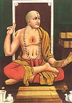

|

|
MADHVACARYA is the principal acarya, or spiritual teacher, in in the Brahma-sampradaya, the Vaisnava disciplic line from which the Gaudiya sampradaya descends. He was born in Udupi, South India, in the early thirteenth century. At the age of five he took initiation and at the age of twelve left home to take sannyasa. Madhvacarya studied the Vedas under the compiler of the Vedas, Vyasadeva, in the Himalayas. Madhvacarya's Vedanta- sutra commentary -- Purnaprajna-bhasya -- establishes the doctrine known as Suddha-dvaita-vada. Madhva used his erudite scholarship to crush the Mayavada (impersonalistic) philosophy and establish devotional service to the Supreme Personality of Godhead. (See Sri Caitanya-caritamrta, Madhya-lila 9.245.) | |
| © 2002-2004 ISKCON |